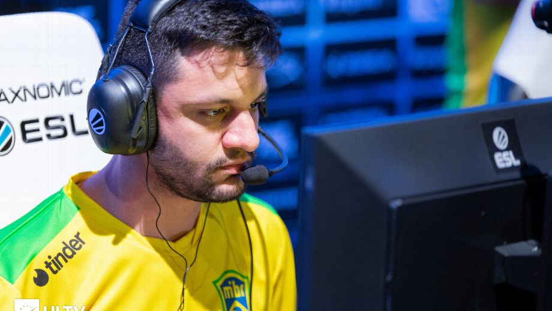

CSGO: 'Organizações estão matando o talento de alguns jogadores', critica Fer

O time de CS:GO do MIBR encerrou 2019 surpreendendo a torcida ao trocar o jogador lucas1 pelo argentino meyern, revelação na Sharks. A contratação foi mais uma das mudanças promovidas no elenco desde o retorno da tag, em 2018.No último domingo (5), o MIBR promoveu um encontro com os fãs na One Academy, em São Paulo, em que o time recém-reformulado teve contato presencial com a torcida. Em entrevista ao ESPN Esports Brasil, o jogador Fer, veterano do time e do cenário, comentou a chegada de meyern e as possibilidades caso o argentino não fosse o escolhido. No último domingo (5), o MIBR promoveu um encontro com os fãs na One Academy, em São Paulo, em que o time recém-reformulado teve contato presencial com a torcida. Em entrevista ao ESPN Esports Brasil, o jogador Fer, veterano do time e do cenário, comentou a chegada de meyern e as possibilidades caso o argentino não fosse o escolhidO jogador comentou que, em sua visão, existem “coisas absurdas” acontecendo no Brasil. “Um jogador que acabou de entrar numa equipe, tem 16 anos, nunca saiu do Brasil e custa US$ 500 mil. Ele não vale isso”, exemplifica. “Algumas organizações estão matando o talento de alguns, a oportunidade que possuem de jogar num time maior, porque querem dinheiro”, diz.
“O cara faz uma organização aqui, tem um time no qual paga uma mixaria de salário e, quando o jogador tem uma grande oportunidade, quer vender o jogador por 500 mil. Isso é muito injusto e no Brasil acontece em algumas organizações, com alguns jogadores", opina Fer.
O veterano deixou claro que o MIBR estava a procura de um quinto jogador brasileiro, mas justificou a escolha de meyern. “[Um brasileiro] faz mais sentido pra gente, mas depois que vimos que não tinha muito o que fazer, falamos: Mano (sic), tem um jogador argentino que é muito bom, tem um buyout justo e ninguém está abusando dele. Ele tem talento, vamos apostar nele”, esclareceu.
Fer comenta a escolha do argentino demonstrando confiança em seu trabalho. “O meyern é um jogador argentino dentro do MIBR e, pra a gente, é um jogador bom. Tem uma mira boa e um talento absurdo. Ele tem tudo para ser um dos melhores do mundo, basta trabalharmos juntos, pegar aquela constância, confiança para melhorar nossa performance”, completa.